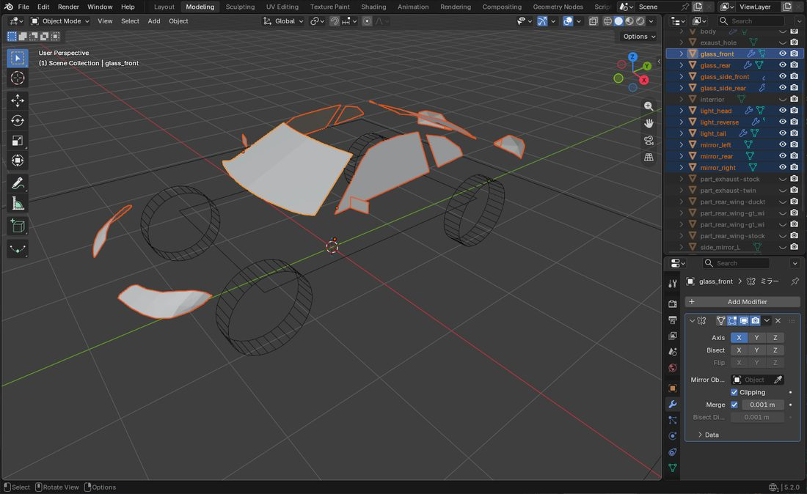

Turbos and blow-off valves, body parts such as aero and fenders, and exhausts.ターボとブローオフバルブ、エアロやフェンダーなどの外装パーツ、マフラー。
ターボは加速が変わる部品、ブローオフバルブは、ブーストが掛かった状態でアクセルを抜いたときやシフトアップのときに「プシュッ」と鳴るだけの部品です。どちらもモデルは要りません。
A turbo changes how the car accelerates; a blow-off valve only adds the "pssh" when you lift off or shift up under boost. Neither needs a model.
data/mypack/car_parts/my_turbo.json:
{
"slot": "turbo",
"turbo": { "boost": 0.5 }
}"part.mypack.my_turbo": "マイタービン"これで、ゲームの G →「パーツ」→「ターボ」のタブに並びます。boost は全開のときにトルクを何割増やすか（0.5 で 1.5 倍）です。
data/mypack/car_parts/my_turbo.json:
{
"slot": "turbo",
"turbo": { "boost": 0.5 }
}"part.mypack.my_turbo": "My Turbo"It now appears under G → "Parts" → the "Turbo" tab. boost is how much extra torque at full boost (0.5 means 1.5×).
data/mypack/car_parts/my_bov.json:
{ "slot": "blowoff" }"part.mypack.my_bov": "マイブローオフ"ターボを付けている車にだけ、「ブローオフ」のタブが出ます。
data/mypack/car_parts/my_bov.json:
{ "slot": "blowoff" }"part.mypack.my_bov": "My Blow-off"The "Blow-off" tab only appears on a car with a turbo fitted.
{
"slot": "turbo",
"turbo": {
"boost": 0.50,
"spool_from": 0.30,
"spool_full": 0.65,
"spool_rate": 2.0
}
}boost … 全開のときにトルクを何割増やすか（0〜1.5）spool_from / spool_full … 効き始める回転と、いっぱいに効く回転。アイドルを 0、レブリミットを 1 とした割合で書く。大きいタービンほど高い回転へ寄せるspool_rate … 効きが上がる速さ（0.1〜20）。小さいほどターボラグが長い同梱の 2 つ（比べる目安）:
boost | spool_from | spool_full | spool_rate | 既定の車の 0-160km/h | |
|---|---|---|---|---|---|
| なし | — | — | — | — | 11.3 秒 |
| 純正タービン | 0.35 | 0.22 | 0.55 | 3.0 | 8.9 秒 |
| ビッグタービン | 0.70 | 0.40 | 0.78 | 1.4 | 8.0 秒 |
{
"slot": "turbo",
"turbo": {
"boost": 0.50,
"spool_from": 0.30,
"spool_full": 0.65,
"spool_rate": 2.0
}
}boost — extra torque at full boost (0 to 1.5)spool_from / spool_full — where boost starts and where it is full, as a fraction from idle (0) to the rev limit (1). Bigger turbos sit higherspool_rate — how fast boost builds (0.1 to 20). Smaller means more lagThe two bundled turbos, for reference:
boost | spool_from | spool_full | spool_rate | Default car 0-160 km/h | |
|---|---|---|---|---|---|
| None | — | — | — | — | 11.3 s |
| Stock turbo | 0.35 | 0.22 | 0.55 | 3.0 | 8.9 s |
| Big turbo | 0.70 | 0.40 | 0.78 | 1.4 | 8.0 s |
cars に車種の id を並べます（ディーゼル車専用のタービン、など）。書かなければ、どの車種にも付けられます。
{
"slot": "turbo",
"cars": ["mypack:prado"],
"turbo": { "boost": 0.4 }
}List car ids in cars (a turbo only for a diesel, say). Leave it out and every car can fit it.
{
"slot": "turbo",
"cars": ["mypack:prado"],
"turbo": { "boost": 0.4 }
}音は部品ではなく車の側で変えます。車の vehicles/<車>.json の sounds に "blowoff" を書きます（車の 11 章）。
The sound belongs to the car, not the part: set "blowoff" in sounds in the car's vehicles/<car>.json (chapter 11 of the Car guide).
"turbo": { ... } を書く（書かないと純正タービンくらいの値になる）"turbo": { ... } (without it you get roughly stock-turbo values)ウイング・バンパー・フェンダーなど、車体に固定される部品です。
Wings, bumpers, fenders — parts fixed to the body.
part_<場所>-<部品名>（例 part_rear_wing-gt_wing）。場所は下の表から選ぶdata/mypack/car_parts/gt_wing.json（ファイル名が部品名）:
{ "slot": "rear_wing" }"part.mypack.gt_wing": "GT ウイング"これで、ゲームの G →「パーツ」に、その場所のタブと部品が並びます。
part_<slot>-<part> (e.g. part_rear_wing-gt_wing); pick the slot from the table belowdata/mypack/car_parts/gt_wing.json (the file name is the part name):
{ "slot": "rear_wing" }"part.mypack.gt_wing": "GT Wing"The slot's tab and the part now appear under G → "Parts" in game.

part_rear_wing-…）が車体と同じモデルの中に重なって入っています。アウトライナーで全部を表示（目のアイコンが開いた状態）にしたまま書き出します。ゲームでは付けている 1 つだけが描かれますpart_rear_wing-…) overlap inside the same model as the body. Export with all of them visible in the outliner (eye icon open); in game only the fitted one is drawn.slot）slot)slot | 入るもの |
|---|---|
front_bumper | フロントバンパー、リップ、スプリッター、カナード |
side_skirt | サイドスカート |
fender | オーバーフェンダー |
rear_wing | スポイラー、ウイング、ダックテール |
rear_diffuser | リアバンパー、ディフューザー |
exhaust | マフラー（3 章） |
slot | What goes there |
|---|---|
front_bumper | Front bumper, lip, splitter, canards |
side_skirt | Side skirts |
fender | Over-fenders |
rear_wing | Spoiler, wing, duck tail |
rear_diffuser | Rear bumper, diffuser |
exhaust | Exhaust (chapter 3) |
その車にオブジェクトのある部品も初期装備も無い場所は、タブが出ません。
A slot's tab only appears if the car has an object for one of its parts, or a default part.
aero）効きを調整しない部品（ダックテールなど）は、数字 1 つで書きます。data/mypack/car_parts/ducktail.json:
{
"slot": "rear_wing",
"aero": { "rear": 0.25 }
}換装画面の「角度」で効きを調整できる部品（GT ウイングなど）は、[最小, 最大] で書きます。前にも効かせたいときは front も書きます。data/mypack/car_parts/gt_wing.json:
{
"slot": "rear_wing",
"aero": {
"rear": [0.6, 1.6],
"front": 0.1,
"angle": 0.4
}
}front / rear … 前と後ろを、どれだけ押し付けるか。大きいほど強い（0〜3）。1 で 200km/h のとき約 190kgangle … 「角度」のスライダーの最初の位置（0〜1、省略で 0.5）。角度で変わるのは走りだけで、見た目は動かない換装画面の右には、その部品のダウンフォースと、付けたときの配分・グリップ・最高速の目安が出ます。
aero)A part whose effect is fixed (a duck tail, say) takes a single number. data/mypack/car_parts/ducktail.json:
{
"slot": "rear_wing",
"aero": { "rear": 0.25 }
}A part whose effect players can adjust with the parts screen's "Angle" slider (a GT wing, say) takes [min, max]. Add front if it should press the front too. data/mypack/car_parts/gt_wing.json:
{
"slot": "rear_wing",
"aero": {
"rear": [0.6, 1.6],
"front": 0.1,
"angle": 0.4
}
}front / rear — how hard it presses the front and rear down. Bigger is stronger (0 to 3). 1 is about 190 kg at 200 km/hangle — where the "Angle" slider starts (0–1, default 0.5). The angle changes driving only; the object does not moveThe parts screen shows the part's downforce and how balance, grip and estimated top speed change.
名前は part_<部品名>（例 part_gt_wing）でも通ります。どちらの決まりにも合わない名前にしたいときは、車の vehicles/<車>.json に対応を書きます。
"parts": {
"mypack:twin_muffler": { "show": ["part_exhaust-twin", "part_exhaust-twin_tip"] }
}show に書けるのは part_ で始まる名前だけです。
part_<part> (e.g. part_gt_wing) works too. For any other name, map it in the car's vehicles/<car>.json:
"parts": {
"mypack:twin_muffler": { "show": ["part_exhaust-twin", "part_exhaust-twin_tip"] }
}Only names starting with part_ are allowed in show.
車の諸元 data/mypack/cars/<車>.json の、values と同じいちばん外側に書きます。
{
"values": { "mass": 1250 },
"default_parts": {
"rear_wing": "mypack:s15_spoiler",
"exhaust": { "part": "mypack:stock_muffler", "removable": false }
}
}"removable": false なら外せない。外すと穴だけ残る部品に使う部品のカーパックを外すと、その部品を付けていた車は、その場所の初期装備（無ければ純正・ノーマル・なし）に戻ります。外せない初期装備が消えて穴が開くことはありません。付けていた部品の id は残っているので、パックを入れ直せば元の部品に戻ります。
Put them in the car's spec, data/mypack/cars/<car>.json, at the top level next to values:
{
"values": { "mass": 1250 },
"default_parts": {
"rear_wing": "mypack:s15_spoiler",
"exhaust": { "part": "mypack:stock_muffler", "removable": false }
}
}"removable": false means it cannot come off. Use it for parts that would leave a holeIf a part's car pack is removed, cars that had the part fitted go back to that slot's default part (or to stock, normal or none if there is no default). A non-removable default never disappears to leave a hole. The fitted part's id is kept, so putting the pack back restores the part.
ゲームは、車体の OBJ の中に入っている部品のオブジェクトを、表示・非表示で切り替えているだけです。付けている部品のオブジェクトだけを描き、残りは描きません。そのため:
body に一体で残した部分は、付け替えても消えないlight_tail などのマテリアルを割り当てると、部品と一緒に光る（車の 3 章）cars で付けられる車種を絞れる。表示名は part.<パック>.<部品名>The game only shows or hides part objects that are already inside the car's OBJ. It draws the objects of the fitted parts and skips the rest. So:
body stays, whatever is fittedlight_tail material light up with the part (chapter 3 of the Car guide)cars limits which cars can fit it. The display name is part.<pack>.<part>見た目と排気音を変える部品です。走りは変わりません。
A part that changes the look and the exhaust note. Driving does not change.
part_exhaust-<部品名>（例 part_exhaust-titanium）data/mypack/car_parts/titanium.json:
{ "slot": "exhaust" }"part.mypack.titanium": "チタンマフラー"これで、ゲームの G →「パーツ」→「マフラー」のタブに並びます。このままでは音はその車のままです。
part_exhaust-<part> (e.g. part_exhaust-titanium)data/mypack/car_parts/titanium.json:
{ "slot": "exhaust" }"part.mypack.titanium": "Titanium exhaust"It now appears under G → "Parts" → the "Exhaust" tab. The sound is still the car's own.
見た目の JSON を置きます。assets/mypack/car_parts/titanium.json（素性と同じファイル名）:
{
"exhaust": {
"pitch": [0.85, 1.00],
"volume": 1.2,
"tone": 0.3
}
}pitch … 音の高さの倍率。1 未満で低くなる。[最小, 最大] で書くと、換装画面の「音の低さ」でその範囲を動かせるvolume … 音量の倍率（0〜2）tone … 「音の低さ」の最初の位置（0 でいちばん高い、1 でいちばん低い。省略で 0）Add a looks JSON, assets/mypack/car_parts/titanium.json (same file name as the definition):
{
"exhaust": {
"pitch": [0.85, 1.00],
"volume": 1.2,
"tone": 0.3
}
}pitch — pitch multiplier; below 1 is deeper. Written as [min, max], the parts screen's "Deepness" slider moves within itvolume — volume multiplier (0 to 2)tone — where the "Deepness" slider starts (0 = highest, 1 = lowest; default 0)assets/mypack/sounds/titanium_exhaust.oggassets/mypack/sounds.json にサウンドイベントを書く:
{
"titanium_exhaust": {
"sounds": [{ "name": "mypack:titanium_exhaust" }],
"attenuation_distance": 64
}
}exhaust で指す:
{
"exhaust": { "sound": "mypack:titanium_exhaust" }
}高回転まで音程を伸ばしたいときは、1 オクターブ上の音源も作って "sound_high" で指します。sound_tools/make_octave_up.py で作れます。音源の作り方の詳しいことは車の 11 章と同じです。
assets/mypack/sounds/titanium_exhaust.oggassets/mypack/sounds.json:
{
"titanium_exhaust": {
"sounds": [{ "name": "mypack:titanium_exhaust" }],
"attenuation_distance": 64
}
}exhaust in the looks JSON:
{
"exhaust": { "sound": "mypack:titanium_exhaust" }
}To keep the pitch rising at high revs, also make a one-octave-up copy and point "sound_high" at it; sound_tools/make_octave_up.py makes one. More on making sounds in chapter 11 of the Car guide.
純正のマフラーも別のオブジェクト（例 part_exhaust-stock）にして部品を作り、車の諸元 data/mypack/cars/<車>.json のいちばん外側で初期装備にします。外すと穴だけ残るなら、外せないようにします:
{
"values": { ... },
"default_parts": {
"exhaust": { "part": "mypack:stock", "removable": false }
}
}初期装備の詳しいことは2 章の「最初から付いている部品にしたい」にあります。
Make the stock exhaust a separate object too (e.g. part_exhaust-stock), give it a part, and make it a default part at the top level of the car's spec data/mypack/cars/<car>.json. If removing it would leave just a hole, make it non-removable:
{
"values": { ... },
"default_parts": {
"exhaust": { "part": "mypack:stock", "removable": false }
}
}More on default parts in chapter 2, "Have it fitted from the start".
sound の名前が sounds.json に無い。ログに警告が 1 行出ているpitch を 1 より大きくしても高くならない … Minecraft の音程の上限に当たっている。高い音源を sound で差し替えるsound name is missing from sounds.json. A warning is in the logpitch above 1 does not raise it — Minecraft's pitch ceiling. Replace the source with a higher one via sound前後のナンバーです。見た目だけで、走りは変わりません。字はプレイヤーが換装画面で打ち、MOD がプレートの絵に焼き込みます。KurumaMod には日本（自家用・軽・事業用）・EU・UK・US の 6 種類が入っていて、どの車にも付けられます。パックで作るのは、それ以外のデザインのナンバーです。
どこに付けるかはプレートではなく車が決めます（車の 8 章）。プレートの側は形と絵と字の決まりだけを持ちます。
Front and rear plates. Looks only; driving does not change. Players type the text in the parts screen and the mod bakes it into the plate's texture. KurumaMod comes with six styles (Japanese private, kei and commercial, EU, UK and US) that fit any car. What a pack adds is a plate of another design.
Where a plate goes is decided by the car, not the plate (chapter 8 of the Car guide). The plate only brings its shape, its picture and the rules for its text.
assets/mypack/textures/plate/my_plate.png。地の色・縁・帯だけで、字は描かない。ここでは US の形を借りるので縦横比は 2:1（例 1024×512）data/mypack/car_parts/my_plate.json。fields が字を打つ欄で、名前は借りる形に合わせる（下の表）:
{
"slot": "plate",
"plate": {
"fields": {
"top": { "max": 16, "default": "MY PACK" },
"text": { "max": 8, "chars": ["A-Z", "0-9", " ", "-"], "default": "ABC 123" },
"bottom": { "max": 16, "default": "DRIVE SAFE" }
}
}
}assets/mypack/car_parts/my_plate.json（素性と同じファイル名）:
{
"plate": {
"model": "kurumamod:models/plate/us.obj",
"texture": "mypack:textures/plate/my_plate.png",
"fields": {
"top": { "color": "#1E326E", "fit": "center" },
"text": { "color": "#1E326E", "emboss": 0.02 },
"bottom": { "color": "#1E326E", "fit": "center" }
}
}
}"part.mypack.my_plate": "マイナンバー"これで、ゲームの G →「パーツ」→「ナンバー」のタブに並びます。選ぶと、欄ごとの入力欄が出ます。
assets/mypack/textures/plate/my_plate.png. Only the colour, border and bands; no text. This borrows the US shape, so make it 2:1 (e.g. 1024×512)data/mypack/car_parts/my_plate.json. fields are the boxes players type into; their names must match the borrowed shape (table below):
{
"slot": "plate",
"plate": {
"fields": {
"top": { "max": 16, "default": "MY PACK" },
"text": { "max": 8, "chars": ["A-Z", "0-9", " ", "-"], "default": "ABC 123" },
"bottom": { "max": 16, "default": "DRIVE SAFE" }
}
}
}assets/mypack/car_parts/my_plate.json (same file name as the definition):
{
"plate": {
"model": "kurumamod:models/plate/us.obj",
"texture": "mypack:textures/plate/my_plate.png",
"fields": {
"top": { "color": "#1E326E", "fit": "center" },
"text": { "color": "#1E326E", "emboss": 0.02 },
"bottom": { "color": "#1E326E", "fit": "center" }
}
}
}"part.mypack.my_plate": "My Plate"It now appears under G → "Parts" → the "Licence plate" tab. Picking it shows a text box for each field.
model | 欄の名前 | 絵の縦横比 |
|---|---|---|
kurumamod:models/plate/jp.obj | region・class・kana・number | 2:1 |
kurumamod:models/plate/eu.obj | country（青帯の中）・text | およそ 4.7:1 |
kurumamod:models/plate/uk.obj | text | およそ 4.7:1 |
kurumamod:models/plate/us.obj | top・text・bottom | 2:1 |
model | Field names | Picture aspect |
|---|---|---|
kurumamod:models/plate/jp.obj | region, class, kana, number | 2:1 |
kurumamod:models/plate/eu.obj | country (in the blue band), text | about 4.7:1 |
kurumamod:models/plate/uk.obj | text | about 4.7:1 |
kurumamod:models/plate/us.obj | top, text, bottom | 2:1 |
同梱の 6 種類の JSON（data/kurumamod/car_parts/plate_*.json と assets/kurumamod/car_parts/plate_*.json）は KurumaMod の jar の中にあります。写して書き換えるのがいちばん早い土台です。
The JSON for the six built-in styles (data/kurumamod/car_parts/plate_*.json and assets/kurumamod/car_parts/plate_*.json) is inside the KurumaMod jar. Copying one and editing it is the quickest start.
素性の JSON（data/ 側）の fields に書きます。並べた順がそのまま換装画面の入力欄の順になります。
max … 字の数の上限（1〜16、省略で 16）chars … 使える字。"0-9" のような範囲、"-" のような 1 字、名前（hiragana・katakana・kanji・latin（英字の大小）・digits）を並べる。省略するとどの字でも打てるdefault … 最初に出ている字_・-fields を書かなければ、字の無い飾りのプレートになります（入力欄は出ない）Write them under fields in the definition JSON (the data/ side). The order you list them in is the order of the text boxes in the parts screen.
max — maximum length (1 to 16, default 16)chars — allowed characters: ranges like "0-9", single characters like "-", or names (hiragana, katakana, kanji, latin (upper and lower case), digits). Left out, anything can be typeddefault — the text shown at first_ and -fields, the plate is decorative and has no text (no text boxes appear)見た目の JSON（assets/ 側）の fields に、欄ごとに書きます。どれも省略できます。
font … TTF のパス（例 mypack:plate_fonts/my_font.ttf）。省略で Barlow Condensed。配る jar に入れるので、再配布してよいライセンスのフォント（OFL など）を使い、ライセンス文も一緒に入れるcolor … 字の色（#RRGGBB、省略で黒に近い灰）fit … 枠への収め方。condense（省略時。収まるうちは中央、はみ出すときだけ横に縮める）・justify（短ければ字の間を広げて枠の幅に揃える。日本の地名）・center（condense と同じだが縮めすぎない。小さな字向け）format … upper（大文字にして出す）・jp_serial（日本の一連番号の形。4 桁に右詰めで、空きは「・」）mono … 字の幅を揃える（数字向け）emboss … 型押しの深さ（0〜0.1、枠の高さに対する比。日本・US は 0.02）Write them per field under fields in the looks JSON (the assets/ side). All are optional.
font — a TTF path (e.g. mypack:plate_fonts/my_font.ttf). Default Barlow Condensed. The font ships inside your jar, so use one whose licence allows redistribution (such as the OFL) and include the licence textcolor — text colour (#RRGGBB; default a near-black grey)fit — how text fills its box: condense (default; centred while it fits, squeezed sideways only when it would overflow), justify (short text is spread to the box width, as for Japanese place names), center (like condense but never squeezed too far; for small text)format — upper (shown in capitals) or jp_serial (the Japanese serial-number layout: right-aligned in four places, blanks filled with "・")mono — equal-width characters (good for numbers)emboss — depth of the pressed-in look (0 to 0.1, as a fraction of the box height; the Japanese and US plates use 0.02)modeling_tools/blender_plate_gauge_custom.py を開き、先頭の SIZE_MM（外形 [mm]）と FIELDS（欄の名前と位置）を書き換えてから実行する。各国の規格どおりの大きさなら blender_plate_gauge_jp.py・_eu.py・_uk.py・_us.py を使うscale で変える）plates の pos はこの点を置く位置）text_<欄> の板で決める。板そのものは描かれません（位置・大きさ・向きだけを読み、その上に字を描く）。欄の名前は JSON の fields と揃える（text_number なら "number"）。字をメッシュで作らない（型押しも MOD が描く）text_ の板を選んで OBJ に書き出し、assets/mypack/models/plate/my_plate.obj に置く。見た目の JSON の model を "mypack:models/plate/my_plate.obj" にする影はプレートを囲む箱で描かれます。角の丸みや絵の抜きは影に出ません。
modeling_tools/blender_plate_gauge_custom.py in Blender, edit SIZE_MM (outline in mm) and FIELDS (field names and positions) at the top, then run it. For a plate of a real country's standard size, use blender_plate_gauge_jp.py, _eu.py, _uk.py or _us.pyscale in the looks JSON)plates pos places this point)text_<field> boards the script places. The boards themselves are not drawn (only their position, size and angle are read, and the text is drawn on top). Field names must match fields in the JSON (text_number is "number"). Do not model the letters (the pressed-in look is drawn by the mod too)text_ boards, export them as an OBJ to assets/mypack/models/plate/my_plate.obj, and set model in the looks JSON to "mypack:models/plate/my_plate.obj"The shadow is drawn as a box around the plate; rounded corners and cut-outs in the picture do not show in it.
見た目の JSON に書きます:
{
"plate": {
"model": "...",
"texture": "mypack:textures/plate/my_plate_front.png",
"texture_rear": "mypack:textures/plate/my_plate_rear.png",
"scale": 1.2
}
}texture_rear … 後ろにだけ使う絵（UK は前が白地・後ろが黄地）scale … 描く大きさの倍率（省略で 1.2、0.1〜3）。メッシュは実寸ですが、車はどれも実車より大きく作ってあるので、実寸のままでは小さく見えます。日本のプレートは 1.15。車の plates の scale はこれに掛かるWrite these in the looks JSON:
{
"plate": {
"model": "...",
"texture": "mypack:textures/plate/my_plate_front.png",
"texture_rear": "mypack:textures/plate/my_plate_rear.png",
"scale": 1.2
}
}texture_rear — picture used only at the rear (UK plates are white at the front and yellow at the rear)scale — drawing size multiplier (default 1.2, 0.1 to 3). Meshes are real size, but every car is built larger than the real thing, so a real-size plate looks small. Japanese plates use 1.15. The car's plates scale is applied on top換装画面の入力欄の横に出る名前は、lang の "plate.<名前空間>.<部品>.field.<欄>" です（例 "plate.mypack.my_plate.field.top": "上の字"）。書かなければ、同梱の欄と同じ名前（region・class・kana・number・country・text・top・bottom）ならその訳が出て、それ以外は欄の名前がそのまま出ます。
The label next to each text box in the parts screen is the lang key "plate.<namespace>.<part>.field.<field>" (e.g. "plate.mypack.my_plate.field.top": "Top line"). Without it, a field named like a built-in one (region, class, kana, number, country, text, top, bottom) uses that translation; any other name is shown as is.
車の諸元 data/mypack/cars/<車>.json のいちばん外側で初期装備にします。同梱のナンバーも、自分のナンバーも指せます:
{
"values": { ... },
"default_parts": {
"plate": "kurumamod:plate_jp_private"
}
}書かなければ、プレイヤーが選ぶまでナンバーは付きません。字は部品の default で始まり、プレイヤーが打ち替えます。付ける位置は車の plates の先頭です（車の 8 章）。
Make it a default part at the top level of the car's spec data/mypack/cars/<car>.json. It can point to a built-in plate or to your own:
{
"values": { ... },
"default_parts": {
"plate": "kurumamod:plate_jp_private"
}
}Without it, there is no plate until the player picks one. The text starts as the part's default and players retype it. It goes in the first position of the car's plates (chapter 8 of the Car guide).
assets/ 側）が無いか、model・texture が欠けている。ログに ナンバーの見た目の定義 で始まる行が出ているtext_<欄> の板が無いか、欄の名前が fields と違うmax を減らすplates を直す（車の 8 章）assets/ side) is missing, or lacks model or texture. A line about the plate's looks definition is in the logtext_<field> board, or its name differs from fieldsmaxplates (chapter 8 of the Car guide)見落としやすいところを並べます。症状が出てから探すときは配布の 3 章へ。
What is easy to miss. If something is already wrong, go to chapter 3 of Shipping.
part_<場所>-<部品名> で、部品名が car_parts/ のファイル名と同じbody から分けて別のオブジェクトにしたlight_ のマテリアルを割り当てたpart_<slot>-<part>, and the part name matches the file name in car_parts/body into their own objectslight_ material on those facesdata/）と見た目（assets/）の car_parts/ に、同じファイル名で両方置いたfields と素性の fields の欄の名前が、メッシュの text_<欄> と揃っているdata/) and the looks (assets/) are in car_parts/ under the same file namefields match the mesh's text_<field> boardsホイールとタイヤの項目は、ホイールの付録 A・タイヤの付録 Aにあります。
Wheel and tyre keys are in the Wheel guide's Appendix A and the Tyre guide's Appendix A.
_ で始まるキーは読み飛ばされます。JSON にはコメントが書けないので、"_comment": "…" のようにメモを残せます。
Keys starting with _ are skipped. JSON has no comments, so use "_comment": "…" to leave notes.
data/<pack>/car_parts/<part>.json| キー | 型 | 既定値 | 意味 |
|---|---|---|---|
slot | 文字列 | 必須 | 付ける場所。"wheel"・"tire"・"turbo"・"blowoff"・"front_bumper"・"side_skirt"・"fender"・"rear_wing"・"rear_diffuser"・"exhaust"・"plate" |
order | 整数 | 100 | 換装画面に並ぶ順 |
cars | 車種 id の配列 | （すべての車種） | 付けられる車種。読める値が 1 つも無ければ、その部品は捨てられる |
turbo.boost | 数字 | 0.35 | ターボだけ。ブーストいっぱいでトルクを何割増やすか（0〜1.5） |
turbo.spool_from | 数字 | 0.25 | ターボだけ。過給が立ち上がり始める回転の割合（アイドル 0〜レブ 1。0〜0.95） |
turbo.spool_full | 数字 | 0.60 | ターボだけ。過給がいっぱいになる回転の割合（spool_from より少し上〜1） |
turbo.spool_rate | 数字 | 3.0 | ターボだけ。ブーストが上がる速さ [1/秒]（0.1〜20） |
aero.front / aero.rear | 数字 or [最小, 最大] | 0 | 外装パーツだけ。その軸のダウンフォースの面積 [m²]（0〜3）。範囲なら角度で調整できる（パーツの 2 章） |
aero.angle | 数字 | 0.5 | 外装パーツだけ。調整していないときの角度（0〜1） |
plate.fields.<欄>.max | 整数 | 16 | ナンバーだけ。字の数の上限（1〜16）。欄は 8 つまで、並べた順が入力欄の順。欄の名前は小文字・数字・_ - の 32 字まで |
plate.fields.<欄>.chars | 文字列の配列 | （どの字でも） | ナンバーだけ。使える字。範囲 "0-9"・1 字・名前（hiragana・katakana・kanji・latin・digits） |
plate.fields.<欄>.default | 文字列 | "" | ナンバーだけ。最初に出ている字（chars と max に合わない字は落とされる） |
data/<pack>/car_parts/<part>.json| Key | Type | Default | Meaning |
|---|---|---|---|
slot | string | required | Where it fits: "wheel", "tire", "turbo", "blowoff", "front_bumper", "side_skirt", "fender", "rear_wing", "rear_diffuser", "exhaust" or "plate" |
order | integer | 100 | Position in the parts screen |
cars | array of car ids | (every car) | Which cars can fit it. If none of the values can be read, the part is dropped |
turbo.boost | number | 0.35 | Turbos only. Extra torque at full boost (0 to 1.5) |
turbo.spool_from | number | 0.25 | Turbos only. Where boost starts to build, as a fraction from idle (0) to the rev limit (1); 0 to 0.95 |
turbo.spool_full | number | 0.60 | Turbos only. Where boost is full (just above spool_from to 1) |
turbo.spool_rate | number | 3.0 | Turbos only. How fast boost builds [1/s] (0.1 to 20) |
aero.front / aero.rear | number or [min, max] | 0 | Body parts only. Downforce area on that axle [m²] (0 to 3). A range is adjustable by angle (chapter 2 of the Parts guide) |
aero.angle | number | 0.5 | Body parts only. Default angle (0 to 1) |
plate.fields.<field>.max | integer | 16 | Plates only. Maximum length (1 to 16). Up to 8 fields; the order is the order of the text boxes. Field names: lower case, digits and _ -, up to 32 characters |
plate.fields.<field>.chars | array of strings | (anything) | Plates only. Allowed characters: ranges like "0-9", single characters, or names (hiragana, katakana, kanji, latin, digits) |
plate.fields.<field>.default | string | "" | Plates only. The text shown at first (characters outside chars or beyond max are dropped) |
assets/<pack>/car_parts/<part>.json（"exhaust": { ... } の中。いちばん外側には書けない）| キー | 型 | 既定値 | 意味 |
|---|---|---|---|
pitch | 数字 or [最小, 最大] | 1 | 音程の倍率（0.5〜1.5）。範囲なら「音の低さ」で動かせる |
volume | 数字 | 1 | 音量の倍率（0〜2） |
sound | id | （その車の音） | 排気音のサウンドイベント |
sound_high | id | （無し） | 高回転側（1 オクターブ上）のサウンドイベント |
tone | 数字 | 0 | 調整していないときの低さ（0〜1） |
assets/<pack>/car_parts/<part>.json (inside "exhaust": { ... }; not at the top level)| Key | Type | Default | Meaning |
|---|---|---|---|
pitch | number or [min, max] | 1 | Pitch multiplier (0.5 to 1.5). A range is adjustable with "Deepness" |
volume | number | 1 | Volume multiplier (0 to 2) |
sound | id | (the car's) | Exhaust sound event |
sound_high | id | (none) | High-rev (one octave up) sound event |
tone | number | 0 | Default deepness (0 to 1) |
assets/<pack>/car_parts/<part>.json（"plate": { ... } の中）| キー | 型 | 既定値 | 意味 |
|---|---|---|---|
model | パス | 必須 | プレートのメッシュ（OBJ）。同梱の形は kurumamod:models/plate/jp.obj・eu.obj・uk.obj・us.obj |
texture | パス | 必須 | 地の絵。字は描かない |
texture_rear | パス | （texture と同じ） | 後ろにだけ使う絵 |
scale | 数字 | 1.2 | 描く大きさの倍率（0.1〜3） |
fields.<欄>.font | パス | Barlow Condensed | 字の TTF |
fields.<欄>.color | #RRGGBB | #141414 | 字の色 |
fields.<欄>.fit | 文字列 | condense | 枠への収め方。condense・justify・center |
fields.<欄>.format | 文字列 | （そのまま） | upper（大文字）・jp_serial（日本の一連番号） |
fields.<欄>.mono | 真偽 | false | 字の幅を揃える |
fields.<欄>.emboss | 数字 | 0 | 型押しの深さ（0〜0.1） |
assets/<pack>/car_parts/<part>.json (inside "plate": { ... })| Key | Type | Default | Meaning |
|---|---|---|---|
model | path | required | The plate mesh (OBJ). Built-in shapes: kurumamod:models/plate/jp.obj, eu.obj, uk.obj, us.obj |
texture | path | required | The background picture, without text |
texture_rear | path | (same as texture) | Picture used only at the rear |
scale | number | 1.2 | Drawing size multiplier (0.1 to 3) |
fields.<field>.font | path | Barlow Condensed | TTF for the text |
fields.<field>.color | #RRGGBB | #141414 | Text colour |
fields.<field>.fit | string | condense | How text fills its box: condense, justify or center |
fields.<field>.format | string | (as typed) | upper (capitals) or jp_serial (Japanese serial number) |
fields.<field>.mono | bool | false | Equal-width characters |
fields.<field>.emboss | number | 0 | Depth of the pressed-in look (0 to 0.1) |
data/<pack>/cars/<car>.json のいちばん外側）と対応（assets/<pack>/vehicles/<car>.json）| キー | 型 | 意味 |
|---|---|---|
default_parts.<場所> | 部品 id or {"part": id, "removable": 真偽} | 何も付けていないときの部品。removable の既定は true。ホイールとタイヤの既定はそれぞれのページの付録 |
parts.<部品 id>.show | オブジェクト名の配列 | その部品を付けたときに出すオブジェクト（part_ で始まる名前だけ） |
plates.front / plates.rear | 候補の配列 | ナンバーを付ける位置。候補は id・pos・yaw・pitch・scale・anchor（車の 8 章） |
data/<pack>/cars/<car>.json) and mapping (assets/<pack>/vehicles/<car>.json)| Key | Type | Meaning |
|---|---|---|
default_parts.<slot> | part id or {"part": id, "removable": bool} | The part fitted when nothing is chosen. removable defaults to true. For wheel and tyre defaults, see the appendix on their pages |
parts.<part id>.show | array of object names | Objects shown while that part is fitted (names starting with part_ only) |
plates.front / plates.rear | array of candidates | Where licence plates go. Each has id, pos, yaw, pitch, scale and anchor (chapter 8 of the Car guide) |
KurumaMod — 諸元の全項目は車の付録 A。ゲージスクリプトは modeling_tools/blender_gauge.py・modeling_tools/blender_wheel_gauge.py・modeling_tools/blender_tire_gauge.py、ナンバーは modeling_tools/blender_plate_gauge_*.py。
KurumaMod — every spec key is in Appendix A of the Car guide. The gauge scripts are modeling_tools/blender_gauge.py, modeling_tools/blender_wheel_gauge.py and modeling_tools/blender_tire_gauge.py, plus modeling_tools/blender_plate_gauge_*.py for plates.